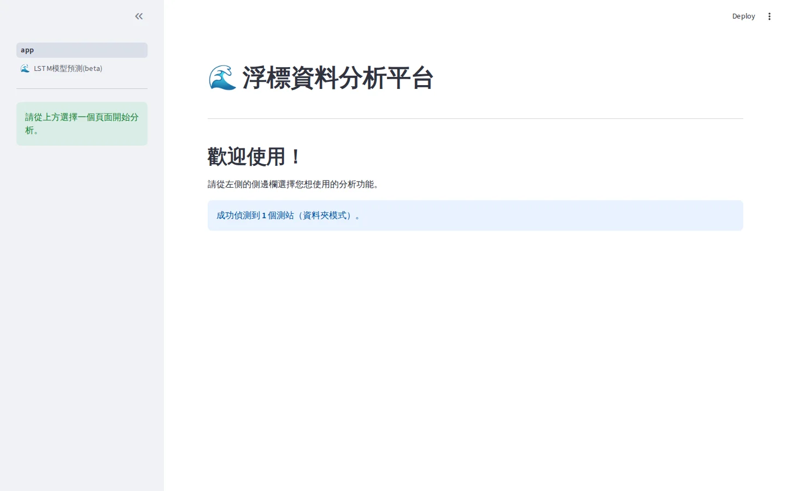
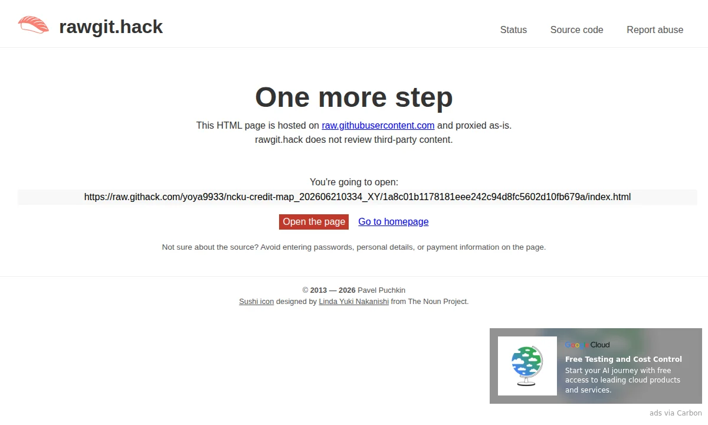

FEATURED / 01DATA + AI
浮標資料分析與航道風險評估平台
把海洋浮標資料 QA、LSTM 預測、模型驗證、快取與風險門檻整合成一套 Streamlit 分析流程。
01 / SELECTED WORK
代表作優先呈現真實產品畫面、問題、系統能力與可以驗證的成果。

把海洋浮標資料 QA、LSTM 預測、模型驗證、快取與風險門檻整合成一套 Streamlit 分析流程。

02 / HOW I BUILD
不是堆工具名稱，而是用資料、邏輯與產品層把問題一路接到能讓人操作的結果。
缺值、異常、時間尺度、資料品質、風險門檻與工程判讀。
時間序列、模型驗證、快取與結果解讀，把模型放進完整流程。
Responsive UI、REST API、資料庫、LocalStorage 與實際部署。
Git/GitHub、CI/CD、測試、靜態網站與可重現 build pipeline。
04 / CONTACT
目前公開聯絡入口集中在 GitHub；正式版仍會保留中英雙語履歷與 Contact Page。